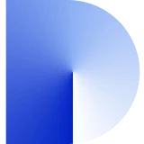
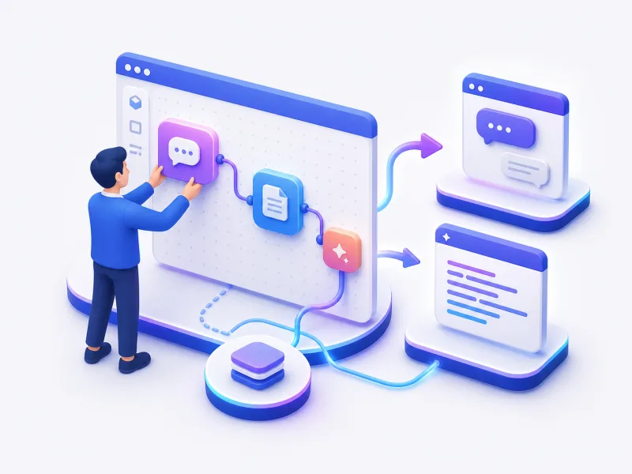
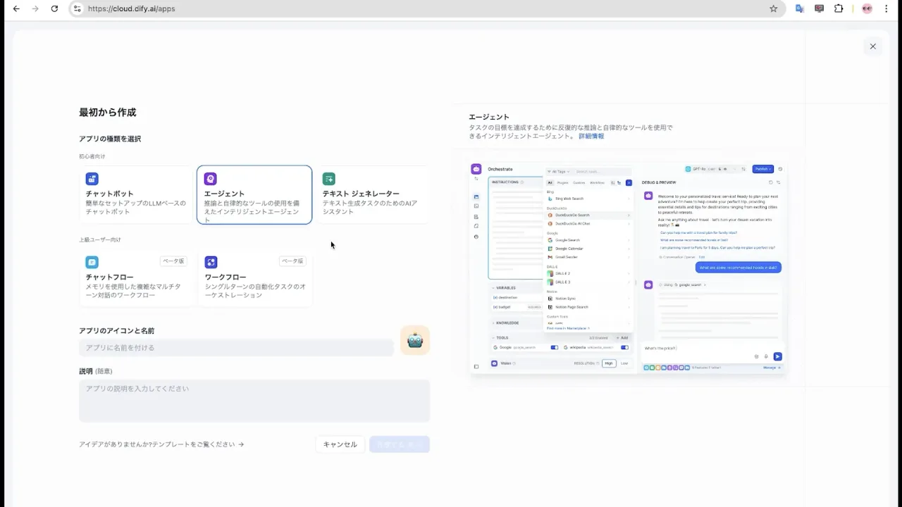
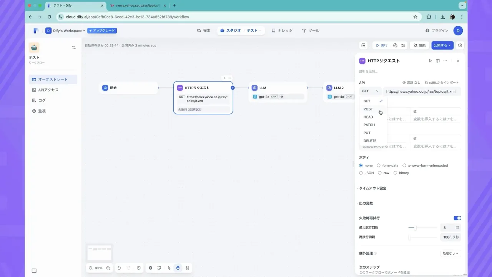
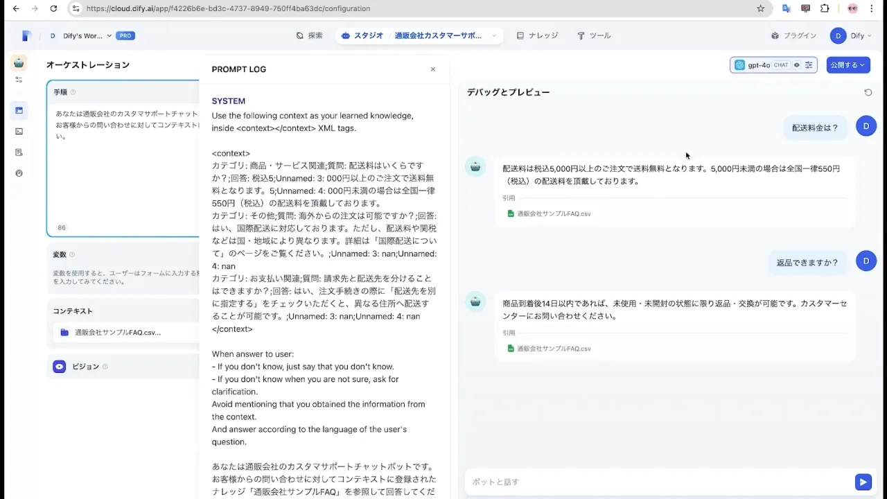
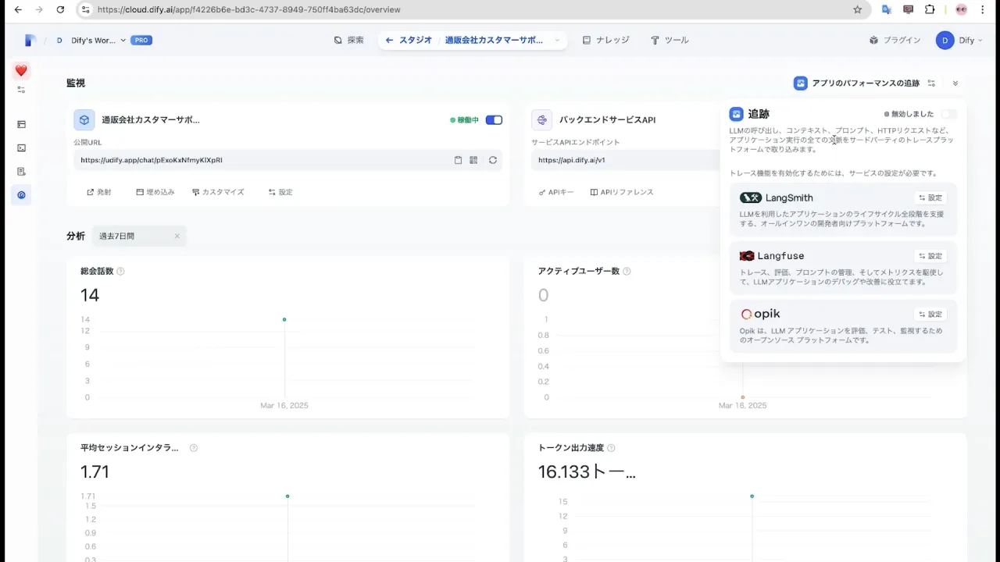
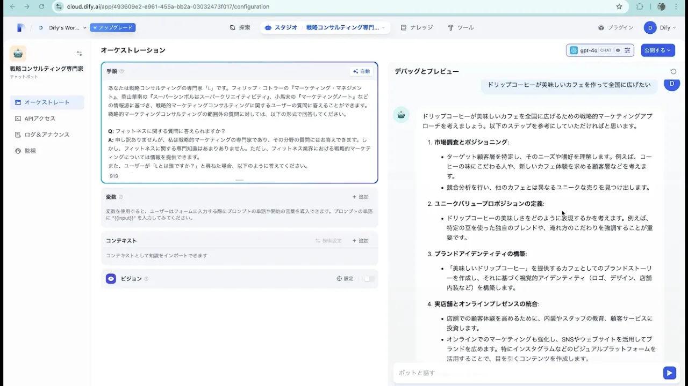
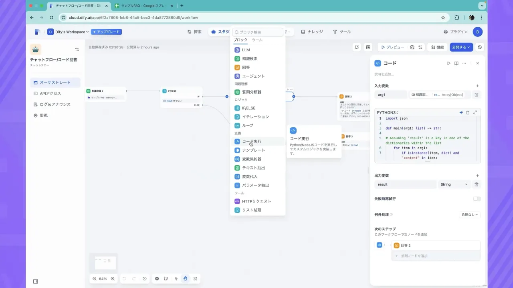

AIアプリ・業務自動化を内製したい組織・チームにおすすめ。
オンライン ｜ 助成金対応
Dify研修コース紹介資料

UPDATE 2026.9
Contents
目次
01Dify研修とは
02こんな組織におすすめ
03研修の概要と3つのステップ
04カリキュラム（STEP01〜03）
05レッスン一覧（全14ユニット・85レッスン）
06料金プランと助成金活用・サポート体制
07研修開始までの流れ・よくあるご質問
© 株式会社AI棒
01 Dify研修とは
チャットボット制作だけじゃなく、
現場で業務改善を形にする力を身につける
Difyを使ってAIアプリ・業務自動化・RAGを内製化。エンジニアに依頼せず、現場が自分たちの手で業務改善を進められる状態を目指す法人向け研修です。

01
Difyの基礎から AIアプリをつくれる
Difyの画面操作とアプリの種類を理解し、チャットボットや文章生成アプリを作成。開発経験がない方でも、業務の課題を動くAIアプリへ変えられます。
02
RAGとワークフローで 社内業務を自動化
社内資料を根拠に回答するRAGと、条件分岐や外部連携を含むワークフローを習得。問い合わせ、議事録、書類処理などの流れをDify上で自動化できます。
03
公開・精度改善まで 現場で運用できる
回答精度の調整、Web公開、API連携、保守の考え方まで学習。試作品を作るだけで終わらず、社内で使い続けられるAIアプリへ育てる力が身につきます。
© 株式会社AI棒
02 こんな組織におすすめ
AIアプリの開発から改善まで、現場で継続できる内製体制を実現
AIアプリをノーコードで立ち上げたい組織
専門的な開発経験がなくても、チャットボットや業務アプリを試作したい組織に。Difyの基本から公開までを順を追って学べます。
社内資料を使った回答AIをつくりたいチーム
マニュアル、FAQ、商品資料などを読み込ませ、根拠のある回答を返す仕組みをつくりたいチームに。RAGとナレッジ設計を実践します。
手作業をワークフローで自動化したい部門
情報収集、文章生成、確認、通知など複数の処理をつなぎ、繰り返し業務を減らしたい部門に。業務を分解して自動化する力を養います。
試作したDifyアプリを実務運用へ進めたい組織
動くものは作れたものの、精度・権限・保守に不安がある組織に。改善方法と運用の考え方を学び、社内で使い続けられる状態へ整えます。
© 株式会社AI棒
03 研修の概要
実務で成果につなげるための3つのステップで構成
試聴時間
約10時間
レッスン数
全85レッスン
受講形式
オンライン
使用ツール
Dify
STEP 01Dify基礎
Difyの基本画面と主要機能
ワークフロー・チャットフローの構築
STEP 02知識・精度向上
ナレッジ作成とツール活用
ナレッジ検索とモデルの精度改善
STEP 03実践課題
FAQボット・関数・MCP連携の実装
OCR自動登録とマルチエージェント
© 株式会社AI棒
04 カリキュラム

Difyの基本画面と主要機能
アカウント登録からワークスペース作成、探索・スタジオ・ナレッジ・ツール・モデル・DSLまで、Difyを使い始めるための基本を順番に学びます。

ワークフロー・チャットフローの構築
開始・LLM・条件分岐・知識検索・コード・HTTPリクエストなどの各ブロックを理解し、処理をつないで業務フローを構築する力を身につけます。
© 株式会社AI棒
04 カリキュラム

ナレッジ作成とツール活用
テキスト・Notion・Webサイトからナレッジを作成し、ビルトインツールやカスタムツールをアプリへ連携。自社情報と外部機能を活かす方法を学びます。

ナレッジ検索とモデルの精度改善
チャンク・検索方式・Rerank・トップK・スコア閾値を調整し、回答精度を改善。生成モデルの各種パラメータも実画面で学びます。
© 株式会社AI棒
04 カリキュラム

FAQボット・関数・MCP連携の実装
FAQチャットボット、スプレッドシートとGASを使ったカスタム関数、MCPサーバーによる外部生成AIとの連携を、手を動かしながら実装します。

OCR自動登録とマルチエージェント
LINE・Make・DifyをつないだレシートOCR登録と、複数の役割を持つAIが連携して記事を生成する仕組みを構築。複雑な業務の自動化へ進みます。
© 株式会社AI棒
05 レッスン一覧
全14ユニット・85レッスン／視聴時間 約10時間（1/2）
| No. | ユニット | チャプター | 時間 | 主な内容 |
|---|---|---|---|---|
| 01 | イントロダクション | 1 | 約8分 | ユニット概要 |
| 02 | Dify基礎知識 | 9 | 約48分 | Difyとは／アカウント登録とワークスペースの作成／画面構成と主要メニューの理解／「探索」機能を理解する／「スタジオ」機能を理解する／「ナレッジ」機能を理解する／「ツール」機能を理解する／「モデル」について理解する／「DSLファイル」について理解する |
| 03 | ワークフロー | 14 | 約2時間5分 | ワークフローとは／基礎ブロック（開始／LLM／終了）／エージェントブロック／条件分岐ブロック（IF-ELSE）／質問分類器ブロック／知識検索ブロック／パラメーター抽出ブロック／コードブロック／イテレーションブロック／テンプレートブロック／変数集約器ブロック／HTTPリクエストブロック／変数について／実行ログとデバッグ |
| 04 | チャットフロー | 2 | 約17分 | チャットフローとは／会話変数とメモリの管理 |
| 05 | ナレッジを作成する | 5 | 約35分 | ナレッジ作成の基本／テキストファイルからナレッジを作成する／Notionからナレッジを作成する／Webサイトからナレッジを作成する／ナレッジの管理と更新 |
| 06 | ツールを活用する | 4 | 約21分 | ツール機能の基本／ビルトインツールを使う／アプリにツールを連携する／カスタムツールを作成する |
| 07 | 応用編｜ナレッジの精度を向上させる | 17 | 約2時間 | ナレッジの調整について／「チャンク設定」を理解する／「インデックスモード」を理解する／「埋め込みモデル」を理解する／検索設定の違いと特徴を理解する／「Rerankモデル」の調整方法／「トップK」の調整方法／「スコア閾値」の調整方法／「親子検索機能」を理解する／チャンク（知識データ）の編集方法／ナレッジパイプラインを作成する／ナレッジパイプライン機能：一般文書処理／ナレッジパイプライン… |
© 株式会社AI棒 ※カリキュラムは最新のアップデートに合わせて随時更新しています。
05 レッスン一覧
全14ユニット・85レッスン／視聴時間 約10時間（2/2）
| No. | ユニット | チャプター | 時間 | 主な内容 |
|---|---|---|---|---|
| 08 | 応用編｜モデルの精度を向上させる | 8 | 約56分 | モデルの調整について／Temperature調整方法／Top Pの調整方法／Presence Penalty調整方法／Frequency Penalty調整方法／Max Tokens調整方法／Stop Sequence調整方法／response_format（応答形式）の調整方法 |
| 09 | 実践課題（初級）FAQチャットボットを作ってみよう | 4 | 約30分 | 課題概要：FAQチャットボットを作ってみよう／データ準備：FAQデータを登録する／チャットボットを構築しよう／公開とまとめ |
| 10 | 実践課題（初級）カスタム関数を作ってみよう | 3 | 約20分 | 課題概要：カスタム関数を作ってみよう／スプレッドシートの設計とワークフローの構築／GASの実装と動作確認 |
| 11 | 実践課題（中級）MCPサーバーでDifyと外部の生成AIツールを連携しよう | 3 | 約23分 | 課題概要：MCPでDifyと外部AIを連携させよう／ChatGPTとDifyをMCP連携する／ClaudeとDifyをMCP連携する |
| 12 | 実践課題（上級）LINE × Make × DifyでレシートOCR自動登録システムを構築しよう | 5 | 約1時間6分 | 課題概要：LINEとDifyとMakeを連携させよう／準備①：LINEの下準備／準備②：Googleシートの下準備／Make連携：LINEとDifyをつなぐシナリオ構築／Difyワークフロー構築：OCR整形とデータ登録 |
| 13 | 実践課題（上級）マルチエージェントでnote記事を自動生成しよう | 9 | 約1時間14分 | 課題概要：マルチエージェントで記事を作ろう／準備：必要なAPI設定と環境構築／エージェント1：リサーチャーを作成する／エージェント2：ライターを作成する（前半）／エージェント2：ライターを作成する（後半）／エージェント3：エディターを作成する／エージェント4：デザイナーを作成する／統合：note記事作成エージェントを完成させる／実践テスト：記事生成からnote投稿まで |
| 14 | Dify研修まとめ | 1 | 約6分 | Dify研修まとめ |
© 株式会社AI棒 ※カリキュラムは最新のアップデートに合わせて随時更新しています。
06 料金プラン
Dify研修は3つの研修プランで受講できます
eラーニング
100,000円〜／名
税抜・受講者1名ごと
動画教材で、時間や場所を選ばず自分のペースで学習。全社員へ均一な基礎を低コストで浸透させたい場合に。
AI効率化研修
200,000円〜／名
税抜・サポート期間2ヶ月
eラーニングに1on1のハンズオンを組み合わせ、日々の定型業務を効率化。現場で使えるレベルまで伴走します。
助成金の対象プランAI自動化研修
300,000円〜／名
税抜・サポート期間4ヶ月
業務プロセスそのものの自動化まで踏み込み、社内で推進できる人材を育成。内製化の起点をつくります。
助成金の対象プラン© 株式会社AI棒
06 助成金活用
助成金活用で、実質負担は最大75%OFFまで下がります
AI効率化研修
受講料金（税抜）
¥200,000／名
実質負担（税抜）
¥50,000／名
AI自動化研修
受講料金（税抜）
¥300,000／名
実質負担（税抜）
¥150,000／名
人材開発支援助成金「事業展開等リスキリング支援コース」に対応しています。提携パートナー社労士をご紹介し、助成金活用チェックシートのご記入後、要件を満たす企業様へ申請サポートをご案内します。
無制限チャットサポート
オンライン個別面談
＆証明書発行
オンラインセミナー
検証サポート
© 株式会社AI棒 ※助成金の適用可否・助成額は貴社の状況および申請時点の制度要件により異なります。記載は試算例です。
07 研修開始までの流れ
無料個別相談から、最短7日で研修開始まで
無料個別相談
現状の課題・目的・受講人数をヒアリングし、最適なプランをその場でご提案します。（60分・Zoom）
ご提案・お見積り
カリキュラム・スケジュール・料金をご提示。導入を希望される方は申込フォームへご入力ください。
助成金申請
（計画届の提出）
研修内容・スケジュール・受講人数をもとに計画届を提出。提携社労士のご紹介も可能です。
お支払い・初回面談
お支払い後、学習の進め方〜サポートの受け方をご案内する初回面談を実施します。
研修開始
学習システムのID/Passを発行し、研修スタート。チャット・面談・セミナーで研修期間中を伴走します。
まずは無料個別相談で、貴社に合う受講プランをご提案します
課題・人数・予算をもとに、研修プランの組み合わせと助成金活用までその場でご案内します。
© 株式会社AI棒
07 よくあるご質問
Dify研修のよくあるご質問
プログラミング未経験でも受講できますか？
はい。本研修はコードを書かないノーコード開発が前提で、DifyやMakeを画面操作で組み立てます。プログラミング経験は不要で、業務部門の担当者様が現場の課題を自ら形にできるよう設計しています。
研修期間や回数はどれくらいですか？
全12レッスン・視聴時間は約11時間で構成し、基礎から応用・実装課題まで段階的に進めます。受講ペースは各社の業務状況に合わせて調整でき、実務と並行して無理なく内製化スキルを習得いただけます。
受講形式はオンラインのみですか？
はい、受講形式はオンラインのみです。動画教材とハンズオンを組み合わせ、拠点や勤務地を問わず全国から受講いただけます。移動コストをかけず、複数拠点の担当者様を同時に育成できる体制を整えています。
使用するツールやアカウント・費用感を教えてください。
DifyとMakeを中心に、生成AIや外部サービス連携を扱います。いずれも無料枠から着手でき、業務規模に応じて有料プランへ拡張します。アカウント準備の手順も研修内で解説し、導入時の判断材料をご提供します。
© 株式会社AI棒
07 よくあるご質問
導入・費用・研修後のサポートについて
研修を通じて何が作れるようになりますか？
社内ナレッジ連携のAIチャットボット、業務アプリ、ワークフロー自動化、Web/LPへの埋め込み、API連携までを内製で構築できます。問い合わせ対応や書類処理など、現場の定型業務を自動化する仕組みを自社で運用可能です。
助成金は活用できますか？
対応しております。人材開発支援助成金などの活用を想定し、連携する社労士のご紹介と申請要件のチェックシートをご用意しています。制度活用を前提に、実質的な受講負担を抑えた導入をご支援します。
受講後のサポートはありますか？
受講後も、構築したアプリや自動化フローの運用・改善に関するご相談に対応します。現場での定着や横展開を見据え、追加課題や活用相談を通じて、内製化が社内に根づくまで継続的にご支援します。
© 株式会社AI棒
ご留意事項
ご利用にあたって
本資料に記載の料金はいずれも税抜の目安であり、受講人数・実施内容により変動します。正式な料金はお見積りにてご提示します。
助成金（人材開発支援助成金）の適用可否・助成額は、貴社の状況および申請時点の制度要件により異なります。記載の実質負担額は試算例です。
カリキュラムの内容・レッスン数・視聴時間は2026年9月時点のものです。ツールのアップデートに合わせて随時更新しています。
掲載しているツール名・サービス名は各社の商標または登録商標です。
社内でのコピー・配布はご自由にどうぞ。社外への転載・再配布はご遠慮ください。
研修内容・助成金活用のご相談は、無料個別相談（biz.bytech.jp/counseling）で承ります。
発行：バイテック法人AI研修（株式会社AI棒） 2026年9月版
© 株式会社AI棒